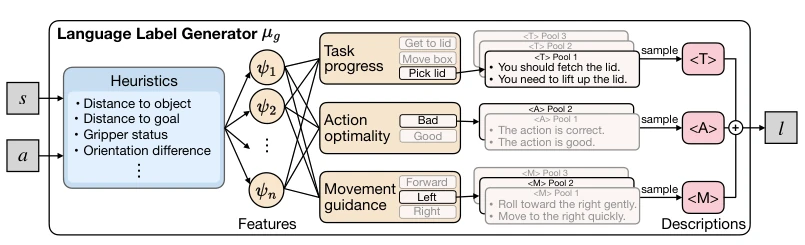
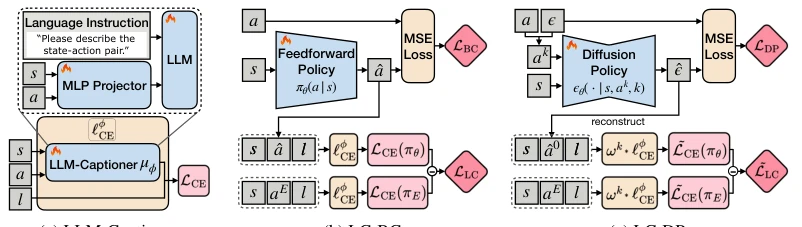
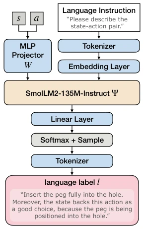
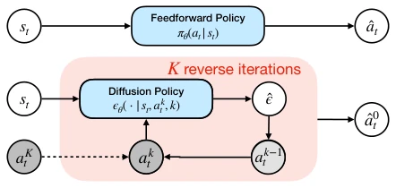
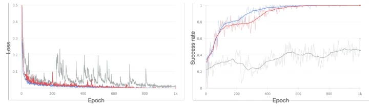
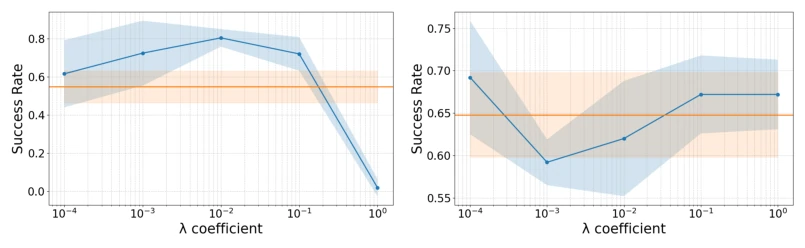

This paper adds a touch of "humanity" to cold scalar rewards, attempting to rescue suboptimal imitation learning with natural language criticism. Traditional methods compress rich behavioral feedback into confidence or discriminator scores, resulting in severe information loss, akin to scoring a robot without teaching it how to improve. The authors devised structured language tags, divided into progress, quality, and guidance, theoretically richer. Experiments confirm it is indeed superior to scalars, particularly in multi-modal tasks. However, reliance on a specialized heuristic generator `µg` carries a hint of "artificial stupidity", remaining distant from true end-to-end understanding. If relying entirely on VLMs to generate tags, current capabilities fall short. Overall, while language as a supervision signal is indeed richer, implementation still depends on specialized rules, remaining distant from true "natural language understanding", representing an advanced version of "changing the soup but not the medicine".
Imitation learning is often constrained by the scarcity of expert data; while suboptimal data is abundant, its quality is mixed [15-25]. Existing methods such as DemoDICE [17], DWBC [20] rely on scalar signals (confidence, discriminator scores), which cannot express intermediate reasoning or specific corrective suggestions [19, 24]. For instance, in long-horizon tasks, scalars cannot distinguish "what was done wrong" and "what to do next", leading to policy failure in out-of-distribution scenarios. Although natural language is rich, existing works often compress it back into scalar rewards [38-41], losing structural information. This paper aims to leverage the structured information of language, avoid information collapse, and directly extract effective supervision from mixed-quality data to address the insufficient expressive power of scalar signals in complex tasks, enabling robots to understand "how to fix" rather than merely "whether it is good".

Figure 1: Language label generator µg. Given a state-action pair (s, a), µg extracts task-specific features (e.g., object distance, gripper status) and routes them to three selectors: task progress <T>, action optimality <A>, and movement guidance <M>. Each selector samples a description snippet, concatenated into the final language label l for scalable and structured supervision.
The overall process is divided into three steps. First, construct a structured language tag generator `µg`, extracting heuristic features (e.g., distance, gripper state) from state-action pairs to output tags concatenated from three parts: task progress `<T>`, action quality `<A>`, and motion guidance `<M>` [Figure 1]. Second, train a differentiable `LLM-Captioner` `µϕ` to distill `µg` into the LLM space, supporting gradient backpropagation [Figure 2a]. Finally, design the Language-Critique Loss `LLC`, comparing the likelihood of policy actions against corresponding expert action tags, penalizing situations where policy actions yield lower expert tag probabilities. This loss is directly applied to Behavior Cloning (LC-BC) and Diffusion Policies (LC-DP), without converting language into scalars [Figure 2b, 2c]. Theoretical proof demonstrates that this objective upper bounds the expert performance gap, and diffusion policies handle the noise impact of diffusion steps through reweighting.

Figure 2: (a) LLM-Captioner architecture and fine-tuning. LLM-Captioner uses an LLM backbone and MLP projector to map state-action pairs into the transformer’s hidden space. We fine-tune µϕ on Dlang G to distill µg. (b) Language-critique behavior cloning (LC-BC). A feedforward policy πθ is trained with LBC and LC-loss LLC. The LC-loss applies cross-entropy ℓϕ CE to policy and expert actions via a frozen LLM-Captioner. (c) Language-critique diffusion policy (LC-DP). A diffusion policy ϵθ is trained with LDP and reweighted ˜LLC. A step-dependent reweighting factor ωk handles varying diffusion steps, and LC-loss applies to clean actions ˆa0 reconstructed from predicted noise ˆϵ.
Evaluated on 8 continuous control tasks, including navigation, manipulation, and Adroit dexterous hand tasks [Figure 3]. Comparison baselines cover BC, DWBC, DemoDICE, and Offline RL (CQL, TD3+BC, DT, EDP). LC-BC and LC-DP outperform baselines on most tasks, with significant improvement especially on the multi-modal task BLOCKPUSH (LC-BC improved from 34.4% to 47.2%). Ablation studies show that structured tag components are indispensable and superior to variants converting language to scalar rewards. Experiments with mixed-quality data indicate that even with impure expert data, language tags can still assist in filtering effective behaviors. On fine control tasks such as PEGINSERT, LC-DP demonstrates obvious advantages, proving that language tags are more suitable for high-level behavior guidance.

Figure 5: Model Architecture of LLM-Captioner. The state-action pair (s, a) is projected into the LLM’s hidden space as a single token via the MLP projector W. This token, concatenated with the language instruction embeddings, serves as input to the decoder transformer Ψ. The final output layer applies a softmax function to sample tokens, generating the resulting language labels l.
其他图片Other Figures

Figure 7: Action sampling process of a diffusion policy. Starting from Gaussian noise aK t , the diffusion policy iteratively denoises actions conditioned on the current state st, producing a clean action sample ˆa0 t through the learned reverse diffusion process. On the other hand, the feedforward policy predicts an action ˆat with a single-step inference conditioned on the state.

Figure 9: Diffusion policy training with different objectives. Red: standard noise- prediction loss LDP; gray: unweighted action-level loss La DP; blue: reweighted action-level loss ˜La DP. Left: training MSE, where La DP exhibits large fluctuations due to timestep k imbalance, while the reweighted and original objectives converge stably. Right: success rate (evaluated every 5 epochs), showing that reweighting restores near-optimal performance.

Figure 10: λ sensitivity. Blue curves represent LC-BC and LC-DP, while orange hori- zontal lines represent BC and DP performance. We vary the balancing coefficient λ ∈ {1.0, 0.1, 0.01, 0.001, 0.0001}.